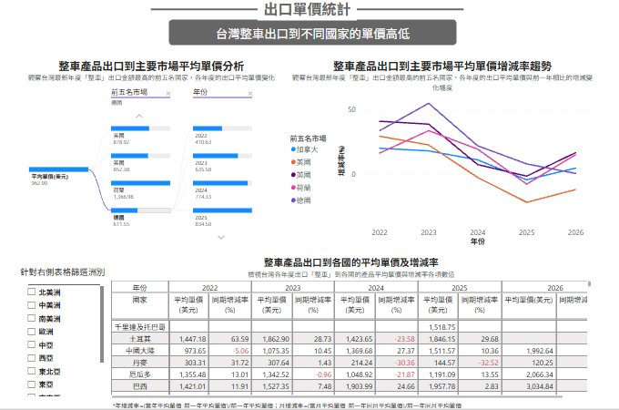

企業拓銷數據服務
企業進出口
數據看板
從數據看見市場，讓市場看見你。
01 問題盤點
中小企業拓銷的三大痛點
不知道產品實際出口到哪些國家，也不了解買家真正的需求。
業務說「這個市場有機會」，但有多少機會，沒人說得準。
不知道行情，報價沒底氣；面對低價競爭，只能跟著降。
→ 這三個問題，數據都能解。
02 999 元買到什麼
一整年專屬訂閱 · 平均一天不到 3 元
財政部關務署 進出口報關統計
不是 AI 生成，可直接作為內部提案與客戶溝通的依據。
- ✓企業專屬客製化看板依你的 HS Code 與產品建置，看到的是自己的市場
- ✓視覺化互動圖表不需要數據背景，會看圖就會用
- ✓全年無限次線上查閱一個網址，想查就查、不限次數
- ✓每月資料自動更新市場在變，數據跟著變
- ✓可查 5 年歷史數據年度看大趨勢，月度看季節性波動
02 各種選擇比一比
一樣要看數據，四條路的成本差多少
經濟實惠首選
| 自己上網拼湊 | 付費資料庫 | 聘數據分析師 | 本方案 | |
|---|---|---|---|---|
| 成本 | 業務的時間成本 | 數十萬起跳 | 月薪 5–8 萬 | NT$ 999／年 |
| 資料來源 | 網路雜訊 | 商業資料庫 | 視分析師而定 | 財政部關務署 |
| 客製化 | 無 | 通用報表 | 高 | 高（依 HS Code） |
| 更新頻率 | 看你勤勞 | 多為季度 | 視排程 | 每月 |
03 用法 01
市場掃描：找出藍海
一眼洞察全球市場對貴公司產品的需求消長。
化學品商外銷東南亞
目標國進口需求穩定成長
本地競爭者缺席，屬藍海市場
參考數據制定具競爭力報價
→ 實現高毛利外銷

出口金額統計 · 主要市場占比與五年趨勢（以自行車產業為例）
03 用法 02
趨勢監控：成長期還是飽和期
食品商開發第二成長曲線
既有日本市場已平緩、成長停滯
運用數據看板掃描，鎖定馬來西亞高成長
結合貿協 Halal 清真認證輔導
→ 數據 × 產業 Know-how 無縫對接
看板可切換年度／月度：年度看大趨勢，月度看季節性波動。
目標市場進出口量趨勢 · 示意圖，非真實資料
03 用法 03
價格防禦：用「科學牌價」談判

出口單價統計 · 各市場平均單價與增減率
「你這個報價太高了。」
「⋯⋯我們品質比較好。」
「依關務署統計，這個市場近三年平均單價落在這個區間。」
- ▸看清各區域真實價格帶知道報價區間在哪
- ▸據理力爭，不被無理砍價守住本來就應該有的利潤
04 申請流程
六個步驟，20 個工作天內交付
- ① 進出口廠商登記
- ② 1 年內未受處分
- ③ 3 年內進出口實績
- ④ 受輔導產品臺灣產製
- ⑤ 資本組成不含陸資
- ⑥ 符合智財權規定
- ⑦ 符合中小企業標準
※ 中小企業認定標準：資本額 1 億元以下；或資本額 1 億元以上、但員工人數 200 人以下者。
立即報名
年度限量
300 家
即止
額滿即止，歡迎報名或預約線上 Demo。
活動頁面 events.taiwantrade.com/115Dashboard
Email tradedashboard@taitra.org.tw
電話 02-2725-5200 #1713 #77006
掃描直接填寫報名表單 · 高雄辦事處專屬